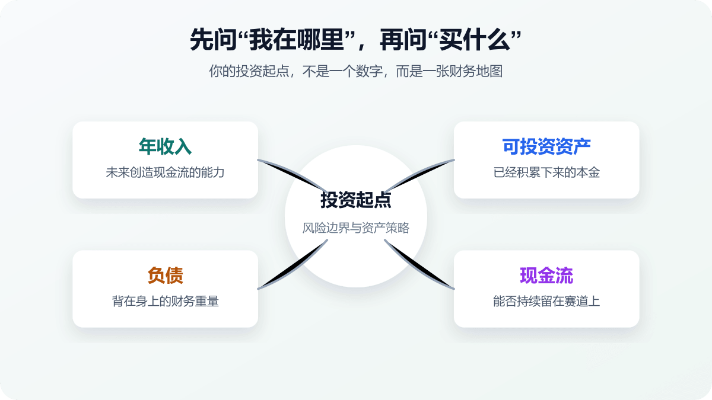
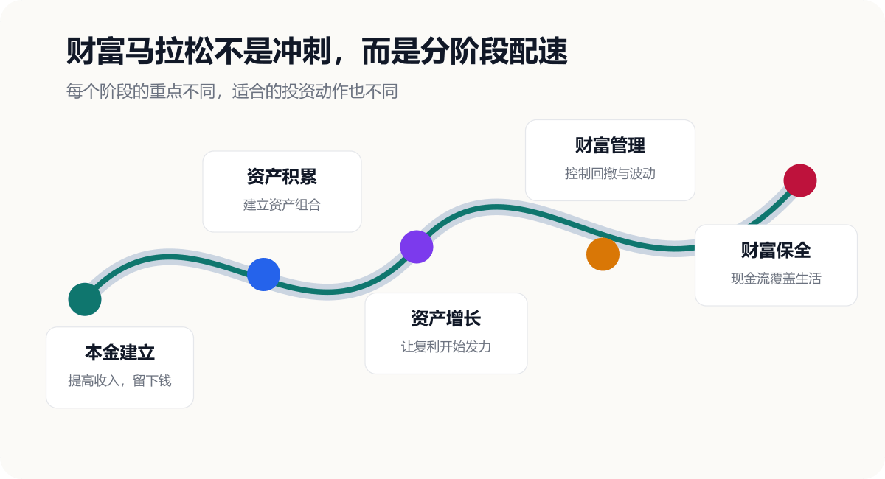
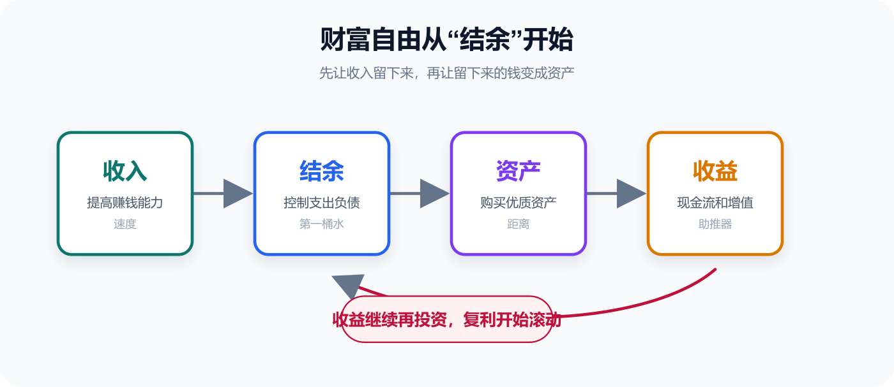

投资是一场马拉松：如果终点是财富自由，你的起点在哪里？
很多人第一次开始投资，问的都是同一个问题：
“现在买什么？”
买黄金？买红利？买纳斯达克？买 A 股？还是买最近热门的 AI、机器人、创新药？
但如果把投资看成一场持续 20 年、30 年，甚至一生的马拉松，你会发现：“买什么”并不是最重要的第一个问题。
真正应该先问的是：
如果终点是财富自由，那么我现在站在哪里？

先定义终点：什么是财富自由？
很多人把财富自由理解成“我有 1000 万”，或者“我有一套房、两套房”。
但财富自由真正重要的，不是一个固定数字，而是：
资产产生的可持续现金流，能够覆盖你的长期生活支出，使你不再完全依赖劳动收入。
如果一个家庭每年需要 30 万生活费，而这些支出几乎都依赖工资，那么无论工资多高，本质上仍然是：
劳动收入 -> 生活消费
但如果有一天，资产每年也能产生 10 万、20 万、30 万现金流，工资就不再是唯一支柱。你会从“人赚钱”，慢慢走向“人赚钱 + 钱赚钱”。
这才是财富马拉松真正的终点。
起点不是本金，而是四个数字
判断一个人的投资起点，不能只看“现在有多少钱”。至少要看四个维度：
| 维度 | 代表什么 | 关键问题 |
|---|---|---|
| 年收入 | 未来创造现金流的能力 | 我还能持续赚多少钱？ |
| 可投资资产 | 已经积累的本金 | 有多少资产可以真正配置？ |
| 负债 | 财务杠杆和压力 | 房贷、车贷、消费贷占多少？ |
| 家庭现金流 | 风险安全边际 | 每年还能稳定留下多少钱？ |
自住房通常不能简单算作可投资资产，因为它承担居住功能，也不容易像基金、债券、股票一样随时调仓。
所以，真正决定你投资策略的，不是单一资产规模，而是：
收入决定速度，资产决定距离，负债决定重量，现金流决定体力。
四种常见起点
同样是“开始投资”，不同人的优先级完全不同。
低收入 + 低资产
假设年收入 12 万，可投资资产 5 万，无负债。
这时最容易把精力放在“哪个行业能涨 50%”“有没有翻倍股”。但 5 万本金即使赚 20%，也只是 1 万元。
如果通过提升职业能力，把年收入从 12 万提高到 15 万，一年就多出 3 万现金流。
这一阶段最值得投资的资产，往往是自己。目标不是暴富，而是：提高收入、建立储蓄、攒下第一桶本金。
中等收入 + 中等资产
假设年收入 40 万，可投资资产 200 万，负债较低。
如果 200 万资产长期获得 5% 收益，一年就是 10 万。这个数字已经值得认真管理。
这时投资逻辑要从“存钱思维”转向“资产配置思维”：现金负责流动性，债券负责防守，宽基 ETF 获取长期增长，红利资产提供现金流，黄金和海外资产用于分散风险。
高收入 + 低资产
假设年收入 200 万，但可投资资产只有 30 万。
高收入不等于高财富。只要资产没有沉淀下来，财富仍然高度依赖劳动收入。一旦收入中断，财富机器也会停下来。
这一阶段最重要的事，不是提高投资风险，而是尽快把强大的赚钱能力转化成资产。
收入不错，但负债重
假设年收入 50 万，可投资资产 30 万，房贷余额 100 万，每年还款 12 万。
12 万占年收入的 24%。这还没算车贷、育儿、保险和日常生活。
所以负债金额本身不是最关键的，真正关键的是：负债对现金流造成了多大压力。
不同阶段，需要不同配速

| 财富阶段 | 核心任务 | 投资重点 |
|---|---|---|
| 本金建立 | 提高收入，留下钱 | 存款、货币基金、国债、少量宽基 |
| 资产积累 | 建立资产组合 | 宽基 ETF、债券、红利、黄金 |
| 资产增长 | 让复利发挥作用 | ETF、QDII、REITs、优质企业 |
| 财富管理 | 控制回撤 | 全球股票、债券、黄金、多资产 |
| 财富保全 | 保值与现金流 | 全球配置、现金流、风险管理 |
一个常见误区是：财富越多，就越应该买高风险资产。
其实未必。很多时候，财富越多，越没有必要赌。因为本金变大以后，亏损 30% 的绝对金额可能会非常可怕。此时风险管理的重要性，会逐渐超过追求极致收益。
财富自由从哪里开始？
回到最开始的问题：如果财富自由是终点，起点在哪里？
我的答案是：
财富自由的起点，不是你第一次买股票，而是你第一次认真管理自己的收入、支出、资产和负债。
完整路径可以浓缩成五步：

- 让收入产生结余。
- 让结余变成资产。
- 让资产产生收益。
- 让收益继续变成资产。
- 让资产现金流逐渐覆盖生活。
投资从来不是一场百米冲刺。
有人第一年赚了 50%，第二年亏了 40%；有人十年追逐热点，最后没有留下多少资产；也有人从未买中过“年度牛股”，只是持续提高收入、控制负债、购买资产，然后坚持 20 年。
最终决定结果的，往往不是某一年跑得多快，而是能不能一直留在赛道上。
写在最后
如果财富自由是一场马拉松：
收入，是你的速度。
储蓄，是你的第一桶水。
资产，是你已经跑过的距离。
负债，是你背负的重量。
现金流，是你的体力。
资产配置，是你的配速策略。
复利，是跑得越远越明显的助推器。
而风险管理决定：你能不能跑完全程。
所以投资真正值得问的第一个问题，从来不是“明天买什么”，而是：
我现在在哪里？我的下一公里，应该怎么跑？